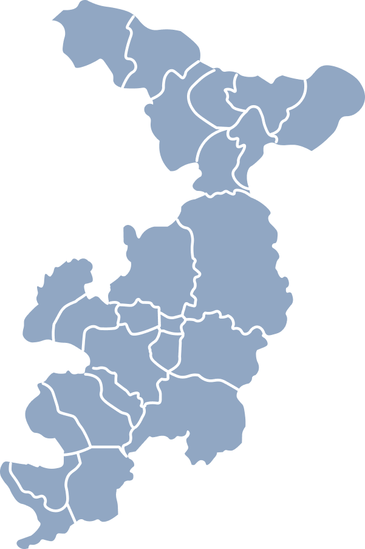
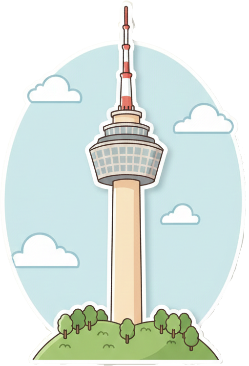
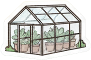
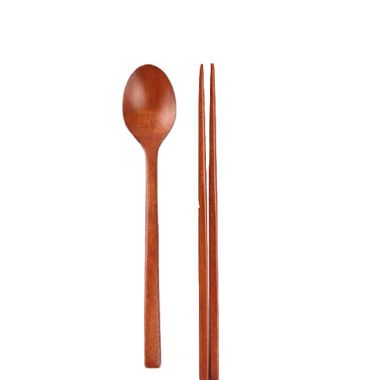
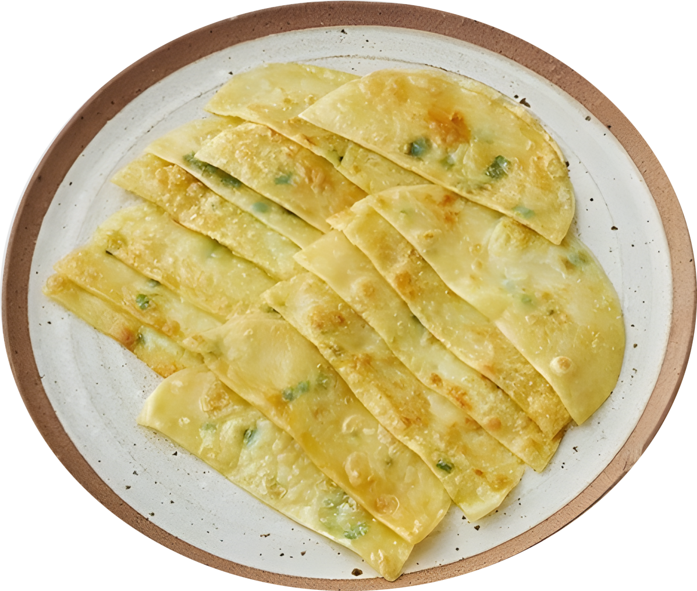
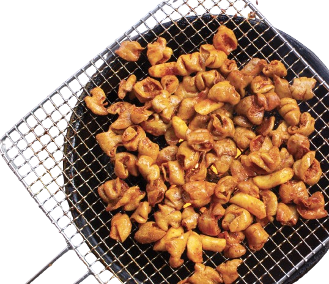

대구 추천 관광지
사람들이 많이찾는 로컬 관광지!

삼국유사 테마파크

주소
군위군 의흥면 일연테마로 100
과거속 삼국유사를 그대로
재현한 역사적 장소
수성못

주소
대구광역시 수성구 두산동
아름다운 못 주변에 맛집이나
카페가많은 핫플레이스
계산성당

주소
대구광역시 중구 서성로 10
대구에 오랜 역사를 가진
구조물이 아름다운 성당
이월드

주소
대구광역시 달서구 두류공원로 200
여러가지 어트랙션을 즐길
수 있는곳

앞산전망대

주소
대구광역시 남구 대명9동
대구의 햇살이 가장먼저
비추는곳이자 신년 첫해를
볼수있다
대구식물원

주소
대구광역시 달서구 화암로 342
대구에서 아름다은 자연을
즐기며 볼수있는곳.

서문시장

주소
대구광역시 중구 큰장로26길 45
여러가지 먹거리나 옷감을 파는
대구에서 가장 오래된 전통시장
낙동강
자전거길

주소
대구광역시 달성군 다사읍
죽곡리
넉동강에서 자전거 라이딩을
즐길수있는 장소
팔공산

주소
대구광역시 동구, 군위군 및 경북
경산시, 영천시, 칠곡군 일대
대구 근처에서 가장큰 산
케이블카를 타거나 갓바위에서
소원을 빌수가 있다
테마별 골목길
대구의 이색적인 골목길을 즐겨보세요!


찜갈비 골목
대구의 전통 찜갈비 맛집들이 모여있는 골목
대구엔 뭐가 맛있을까?



납작만두
바삭하고 얇은 만두피가 매력인 대구식 분식이에요